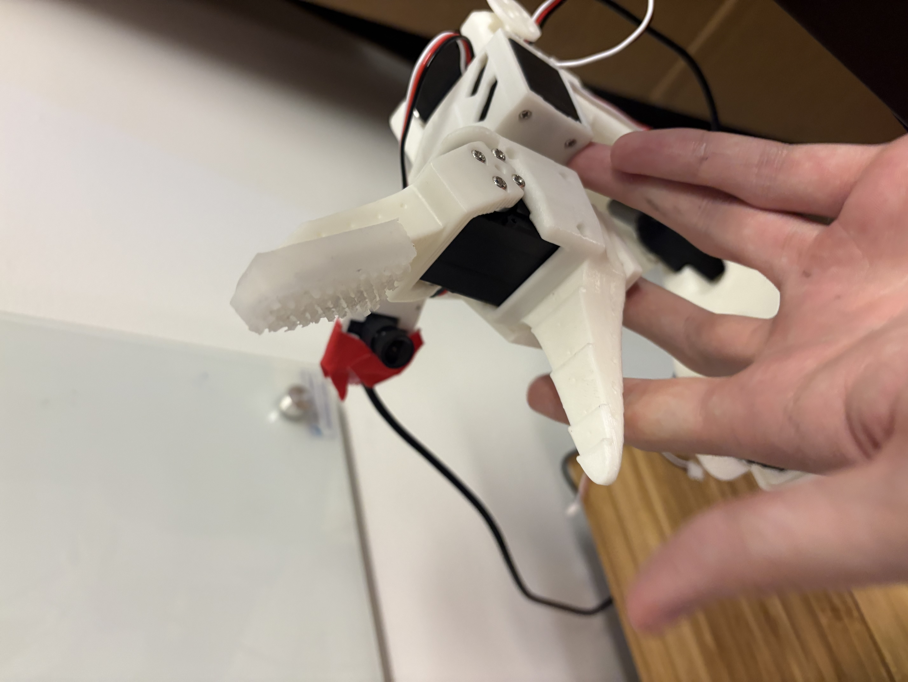
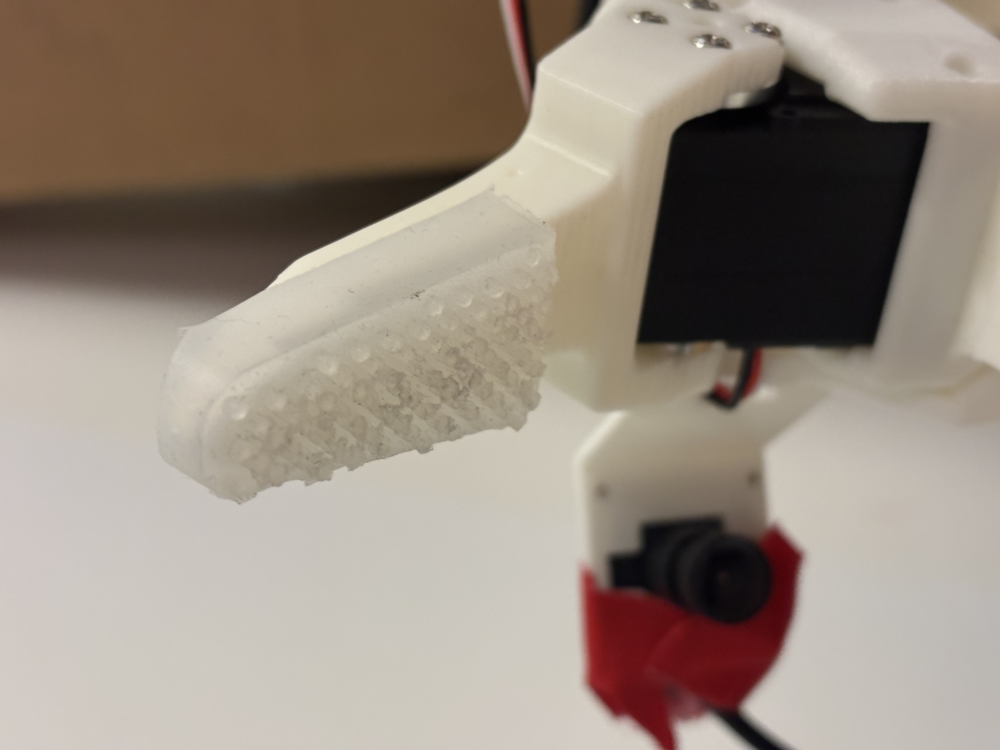
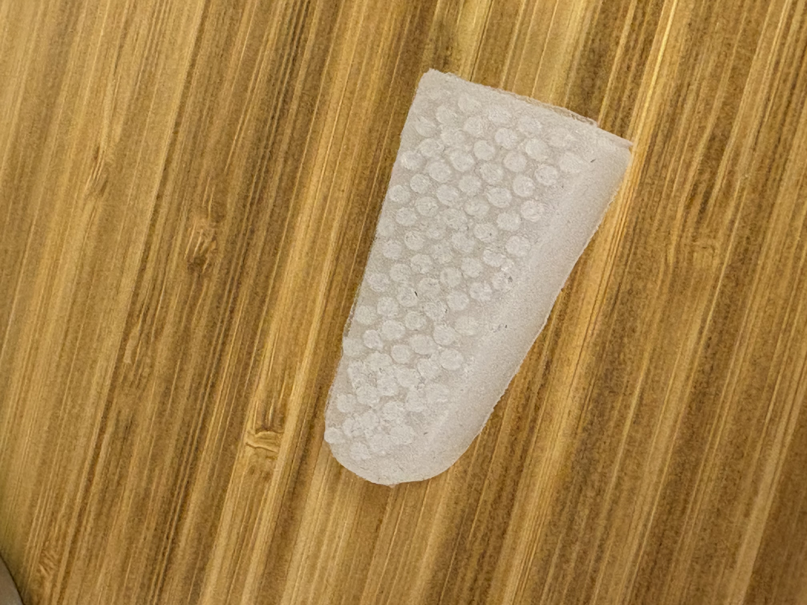
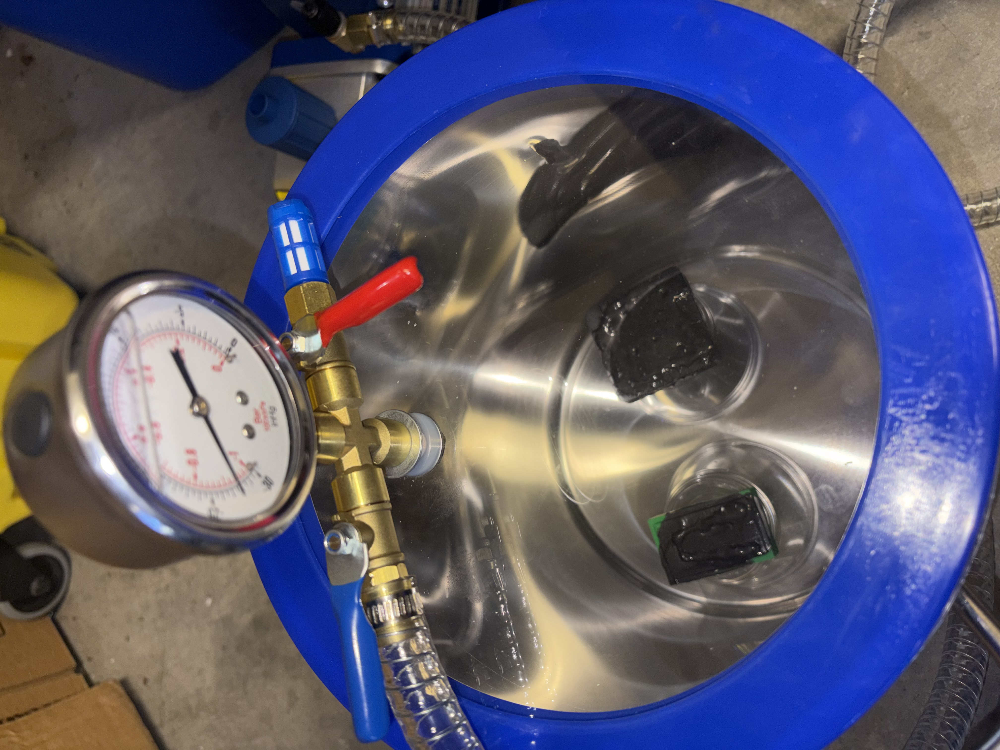

Building tactile sensors for robot hands. The approach: cast a custom piezoresistive material into a fingertip shape and embed electronics directly into it to read both normal force and shear. When the fingertip contacts a surface, resistance changes across the array — that signal gives you contact location, force magnitude, and shear direction. Integrated with the LeRobot SO-101 gripper as the development platform.

The Fingertip
The piezoresistive pad is cast from a silicone-carbon composite. The bump array on the surface concentrates contact stress onto individual sensor nodes, improving spatial resolution. A small camera module inside the finger captures marker deformation for optical cross-validation.


Electronics
Custom PCB handles the multiplexing, ADC, and power for the sensor array. The board fits inside the finger housing and connects over SPI.


Fabrication
The piezoresistive pads are degassed in a vacuum chamber after casting to remove air bubbles from the silicone mixture before curing.

Sensing
- Modality: Piezoresistive (primary) + optical deformation tracking
- Detects: Normal force, shear force, contact location
- Material: Custom silicone-carbon composite — cast in-house
Hardware
- PCB: Custom board — multiplexed ADC, SPI interface, LED illumination
- Platform: LeRobot SO-101 gripper (drop-in compatible)
- Target BOM: Sub-$30 per fingertip
Status
- Hardware prototype complete — sensor design, casting, PCB
- Dataset collection and model training in progress